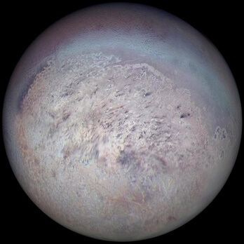
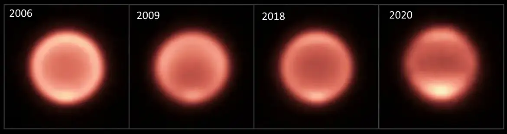

Structure
| Layer | Composition |
|---|---|
| Atmosphere | Gaseous hydrogen, helium and methane |
| Mantle | Water, ammonia and methane ices |
| Core | Silicate / iron-nickel rock |
Atmosphere
Neptune's blue color is much more vivid than that of Uranus, which
has a similar amount of methane - so an unknown component is
presumed to cause Neptune's intense color.
Mantle
The fluid mantle has a high electrical conductivity and gives rise
to the planet's magnetic field.
Moons

Neptune has 14 known moons, with the largest and most well-known being Triton, which is one of the few moons in the solar system that orbits its planet in a retrograde direction. The other moons of Neptune are much smaller and have irregular shapes, likely indicating that they are captured asteroids or fragments of larger objects.
Noticeable point

Neptune is not a particularly hot planet, despite being one of the
four gas giants in the outer solar system. Its surface temperature
is around -218°C, which makes it the coldest planet in the solar
system. The planet's internal heat, however, is thought to be
significant, with Neptune radiating more than twice the amount of
energy it receives from the Sun. This internal heat is thought to be
generated by the decay of radioactive elements in its core.
Although it has cooled over the past 15 years.